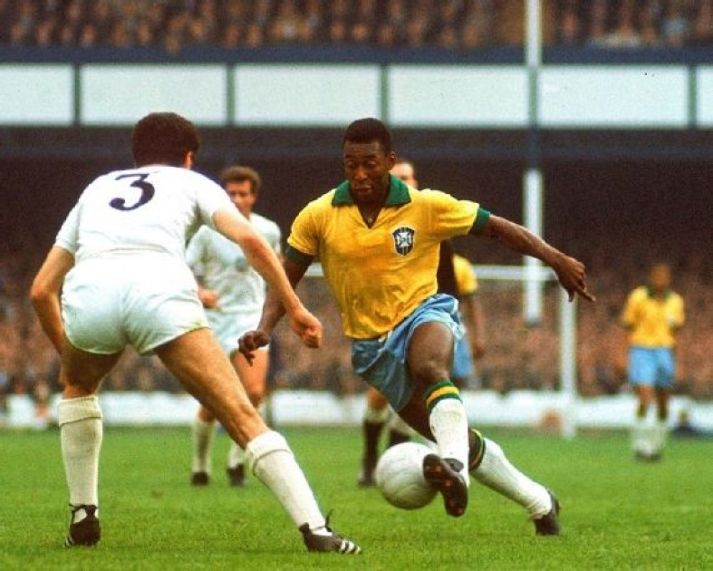
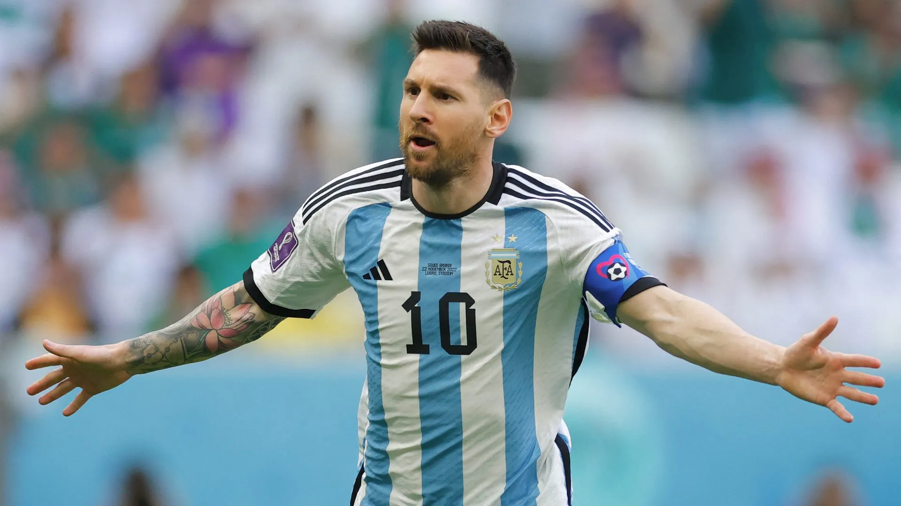
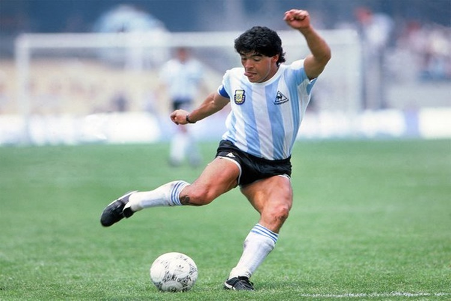
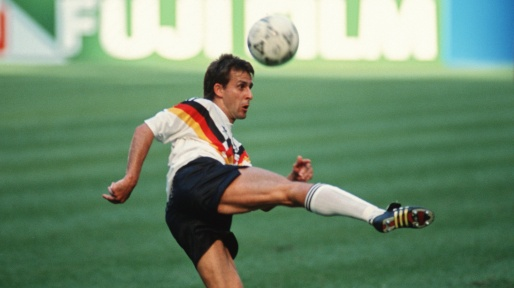
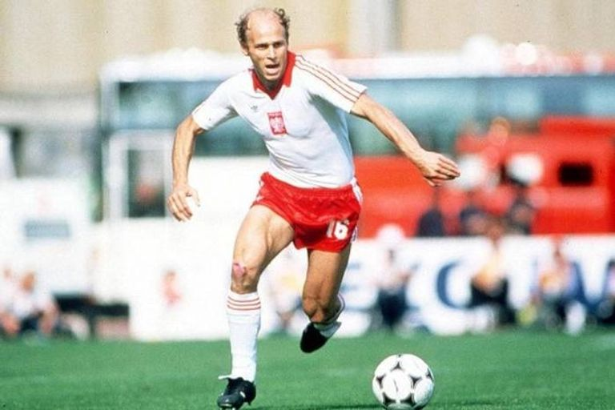

.png)
Top Seleções da História
1

Brasil
5 títulos — Recorde- Única seleção presente em todas as Copas
- Era Pelé e gerações históricas
2

Alemanha
4 títulos- Extremamente consistente
- Muitas finais disputadas
3

Itália
4 títulos- Forte tradição defensiva e tática
4

Argentina
3 títulos- Crescimento moderno
- Era Messi
5

França
2 títulos- Forte geração atual (Mbappé)
6

Espanha
1 título (2010)- Domínio técnico — tiki-taka
7

Inglaterra
1 título (1966)- Forte tradição, mas pouca regularidade em títulos
Top Artilheiros da Copa do Mundo
1

Miroslav Klose
Alemanha
16 gols — Recorde absoluto2

Ronaldo Fenômeno
Brasil
15 gols3

Gerd Müller
Alemanha
14 gols4

Just Fontaine
França
13 gols5

Lionel Messi
Argentina
13 gols6

Kylian Mbappé
França
12 gols7

Pelé
Brasil
12 golsTop Assistentes da Copa do Mundo
Assistências só foram registradas com precisão a partir dos anos 1990/2000. O ranking não é 100% oficial como o de gols.
1

Pelé
Brasil
- Entre os maiores em assistências totais na história
- Assistências: 10
2

Lionel Messi
Argentina
- O segundo maior em assistências totais nas Copas
- Assistências: 8
3

Diego Maradona
Argentina
- O terceiro em assistências nas Copas
- Muito decisivo em 2010 e 2014
4

Pierre Littbarski
Alemanha
- O quarto maior Assistente em copas
- Assistências: 7
5

Grzegorz Lato
Pôlonia
- O quinto maior Assistente em copas
- Assistências: 7